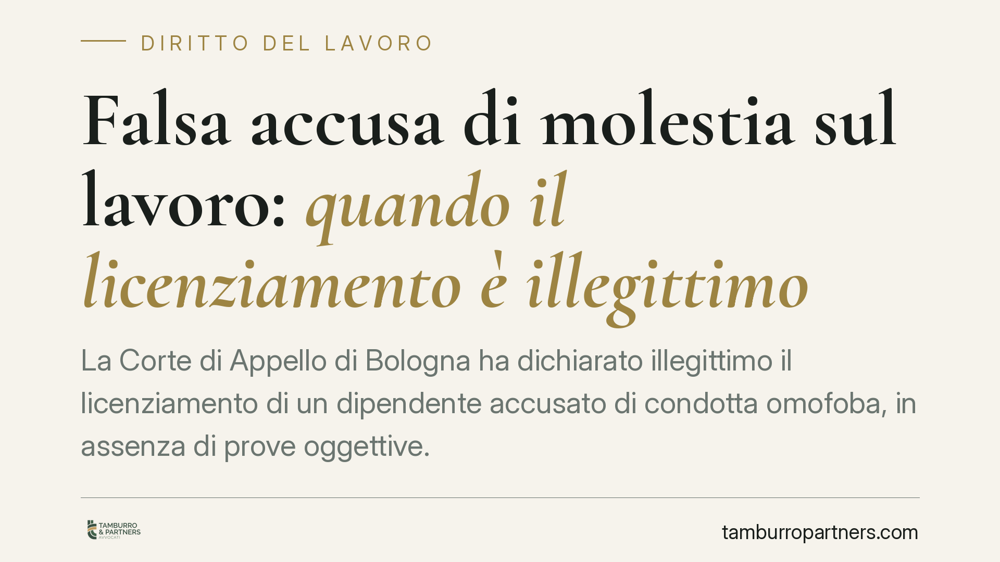

Falsa accusa di molestia sul lavoro: quando il licenziamento è illegittimo
La Corte di Appello di Bologna ha dichiarato illegittimo il licenziamento di un dipendente accusato di condotta omofoba, in assenza di prove oggettive. La pronuncia ribadisce che l'onere della prova grava sul datore e chiarisce il valore non vincolante dei verbali penali nel processo civile del lavoro. Un tema che tocca sia le imprese sia i lavoratori.

Il caso
Un dipendente viene licenziato dopo la segnalazione di un collega che lamenta espressioni a sfondo omofobo. L'azienda contesta la condotta e procede al recesso per giusta causa. Il lavoratore impugna: sostiene che l'accusa non trovi riscontro in elementi oggettivi.
La Corte di Appello di Bologna accoglie il ricorso. Il punto decisivo non è la gravità astratta del comportamento contestato, ma la sua prova. Un fatto contestato non è, di per sé, un fatto provato.
*Nota redazionale: gli estremi identificativi della sentenza (numero e data di deposito) sono in corso di pubblicazione. Il commento sarà aggiornato non appena disponibili.*
Inquadramento normativo
Nel licenziamento disciplinare l'onere della prova ricade sul datore di lavoro. Lo prevede l'art. 5 della Legge 15 luglio 1966, n. 604: spetta a chi recede dimostrare la sussistenza della giusta causa o del giustificato motivo. Non è il lavoratore a dover provare la propria innocenza; è l'impresa a dover dimostrare il fatto addebitato.
Sul valore dei verbali di polizia giudiziaria o degli atti di un procedimento penale nel giudizio civile del lavoro, la regola è chiara: tali documenti sono liberamente valutabili dal giudice del lavoro, ma non vincolanti. Il giudice civile compie una propria autonoma valutazione dei fatti. La presenza di una denuncia o di un verbale non equivale a prova della condotta.
*Nota di prudenza: i precedenti di legittimità richiamati in prima battuta (Cass. n. 2436/2019 e n. 5317/2017) sono in fase di verifica in banca dati quanto a esatto contenuto e pertinenza. Ne rinviamo la citazione puntuale alla versione definitiva.*
Fatto contestato e fatto provato
La distinzione è il cuore della pronuncia. Il datore può ritenere in coscienza che una condotta sia avvenuta; ma il potere direttivo e disciplinare non autorizza a trasformare un sospetto, o una segnalazione unilaterale, in accertamento.
Senza riscontri — testimonianze coerenti, elementi documentali, plurimità di fonti — l'addebito resta indimostrato. E un addebito indimostrato non regge un licenziamento.
È un equilibrio che tutela entrambe le parti. Tutela il lavoratore da recessi fondati su accuse fragili. Ma tutela anche chi segnala in buona fede: la buona fede del denunciante non viene messa in discussione dal fatto che, sul piano probatorio, l'episodio non risulti dimostrato. Sono due piani distinti.
Implicazioni pratiche
Per l'impresa, il rischio di un licenziamento non adeguatamente istruito è concreto. Se il recesso è dichiarato illegittimo, il regime sanzionatorio dipende dalla data di assunzione.
Per i lavoratori assunti prima del 7 marzo 2015 si applica l'art. 18 della Legge 20 maggio 1970, n. 300 (Statuto dei Lavoratori): a seconda del vizio, il giudice dispone la reintegrazione nel posto di lavoro oppure una tutela indennitaria. L'insussistenza del fatto contestato apre alla tutela reintegratoria.
Per i lavoratori assunti dal 7 marzo 2015 vale il D.Lgs. 4 marzo 2015, n. 23 (contratto a tutele crescenti): la reintegrazione è circoscritta ai casi di insussistenza del fatto materiale contestato; negli altri casi la tutela è di regola indennitaria, parametrata all'anzianità di servizio.
�In sintesi: quando manca la prova del fatto, il rischio di reintegra è più alto in entrambi i regimi.
Cosa fare in concreto
- Istruisci la contestazione prima di procedere. Raccogli riscontri oggettivi: testimonianze, documenti, elementi verificabili. Non fondare il recesso su una sola segnalazione non riscontrata.
- Non confondere la denuncia penale con la prova. Un verbale o un esposto non basta: nel giudizio del lavoro il giudice valuta autonomamente.
- Rispetta il procedimento disciplinare dell'art. 7 dello Statuto: contestazione tempestiva e specifica, termine a difesa, proporzionalità della sanzione.
- Valuta il regime applicabile in base alla data di assunzione, per stimare correttamente il rischio economico e reintegratorio.
- Tutela chi segnala in buona fede, senza per questo derogare all'obbligo di accertamento: le due esigenze convivono.
Conclusione
La pronuncia bolognese non riduce la gravità delle condotte discriminatorie. Ribadisce, piuttosto, un principio garantista: il potere disciplinare si esercita su fatti provati, non su fatti solo affermati. Consigliamo alle imprese di strutturare istruttorie interne solide prima di ogni recesso e ai lavoratori di verificare, in caso di licenziamento, la reale consistenza probatoria degli addebiti.
Contributo informativo a cura di Tamburro & Partners Avvocati - Avv. Giuseppe Tamburro. Non costituisce parere legale.
Ogni storia di lavoro ha i suoi tempi.
Se gestisci HR e vuoi un confronto su contenzioso, ispezioni o licenziamenti, scrivi allo studio. Ti rispondiamo entro un giorno lavorativo.